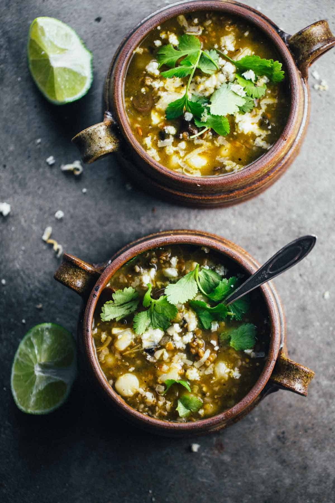

Mushroom Pazole

Description
With rich sauteed mushrooms and poblano peppers cooked with tomatillo salsa, broth, soft white hominy, a handful of nutty, chewy bulgur for extra texture and depth, and cilantro and lime to finisheroff. It’s got a zing of tangy deliciousness and a lick of oh-my-goodness spicy heat that is, in the magic ways of food, 800% addicting.
Ingredients
- Muschrooms
- Hamony
- Limes
- Pablano Peppers
- Jalapeno Peppers
- Onion
Steps
- Heat the olive oil over medium high heat. Add the onions; saute for 1-2 minutes. Add the peppers and mushrooms; saute for 10-15 minutes or until the mushrooms are cooked down to about half their volume and are deep brown (and add another drizzle of oil at this point if necessary).
- Add the seasoning, salsa verde, water, 3 cups broth, bulgur, and hominy. Simmer about 15 minutes or until the bulgur is soft. Add additional broth if needed.
- Serve with cilantro, a squeeze of lime juice, shredded cheese, and chips! Add more broth or water to the leftovers – it will thicken as the bulgur continues to soak up the moisture.